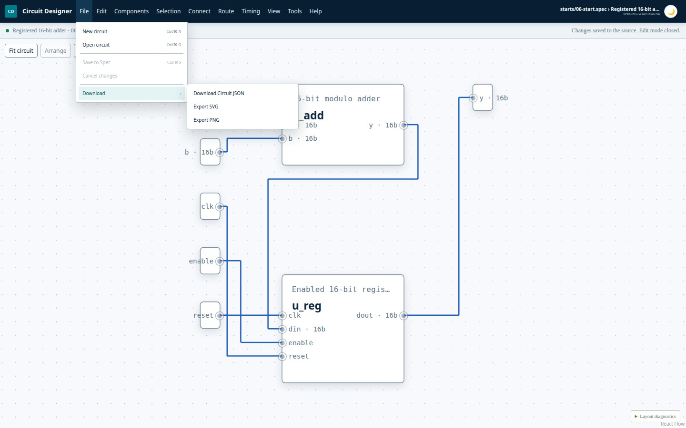

CORE 08 / 09 · GUIDED PRACTICE
Export and reopen your work
Check portable Circuit and image exports against the saved circuit.
Before you start
Spec Editor, Circuit Designer, and a browser download directory inside the tutorial TEMP_ folder.
Read each action, do it, then compare the expected result before continuing. Use a fresh prepared start to retry. Reading time and automated execution time are not measured learner practice time.
Actions
Open the saved Circuit
Open08-start.specand launch its Design in Circuit Designer. Finish or cancel any private draft.Expected result: The source-bound Circuit shows the completed seven-net graph.
Download portable JSON
Select File → Download → Download Circuit JSON. Save it under your run directory.Expected result: A .circuit.json file is downloaded; the source Spec is not replaced.

File → Download offers portable JSON and image exports. Select the image to view its full size. Export SVG
Select File → Download → Export SVG. Save and open the image.Expected result: The SVG has the expected labels and routes.
Export PNG
Use the same submenu for Export PNG. Save and open it.Expected result: The raster image matches the saved view and its visible timing-overlay setting.
Open a separate root tab
Open Circuit Designer at its root URL in a new tab. Select File → Open circuit and choose the downloaded JSON.Expected result: An independent Circuit copy opens, separate from the Spec projection.
Inspect its binding
Read the binding notice and File save controls before editing.Expected result: This independent copy saves by browser download; it does not write back to the original Spec.
Compare the graph
Compare instance names, ports, seven nets, and routes with the source-bound tab.Expected result: The portable graph matches. Image exports are views, not editable hardware source.

Compare the saved canvas with each exported view. Select the image to view its full size. Confirm the original source
Reopen the original Spec in Spec Editor and compare its connections.Expected result: Export and independent opening have not changed the original Spec.

Check your result
The portable copy has the same graph. SVG and PNG have readable labels and the expected layout. The original Spec retains its connections.
Try it yourself
Move a block in the independent copy and save it. Confirm that its downloaded JSON changes while the original Spec does not.
If it fails
If export is blocked by a draft, save or cancel that draft first. If your browser saves outside the repository, set its download location before repeating the export.
Continue
NEXT GUIDEMake a change independentlyReference: circuit designer · Complete example